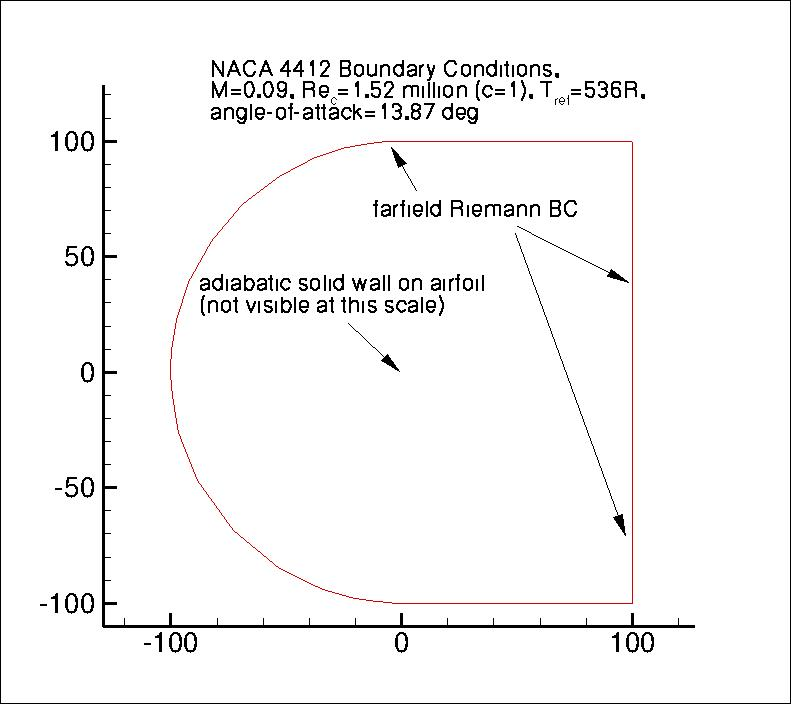
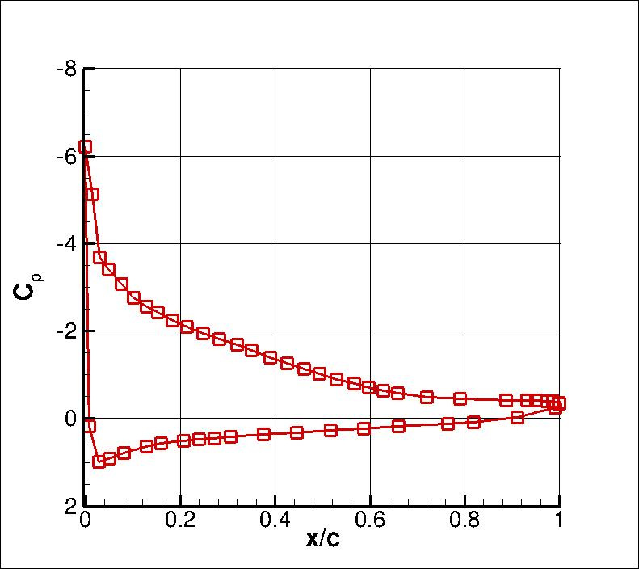
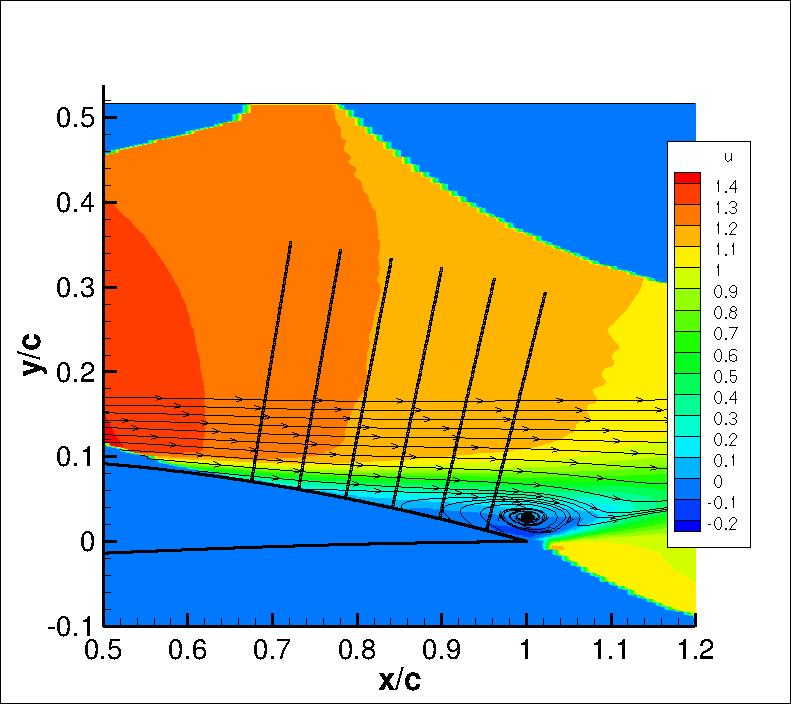

|
Langley Research CenterTurbulence Modeling Resource |
Return to: Turbulence Modeling Resource Home Page
2DN44: 2D NACA 4412 Airfoil Trailing Edge Separation
The purpose here is to provide a
validation case for turbulence models. Unlike verification, which seeks to
establish that a model has been implemented correctly, validation compares
CFD results against data in an effort to establish a model's ability to
reproduce physics. A large sequence of nested grids of the same family are
provided here if desired. Data are also provided for comparison. For this
particular "essentially incompressible" airfoil case with upper surface trailing
edge separation (from Coles & Wadcock),
the data are from an experiment.
The nominally 2D experiment utilized the NACA 4412 airfoil. For purposes of the validation,
for the primary C-grid used, the definition of the airfoil shape was slightly altered so that the airfoil closes at
chord=1 with a sharp trailing edge. This was done by replacing the 0.1015*x4 term in the
expression for thickness with 0.1036*x4, which yields only a very small change in
the airfoil shape (see: NACA airfoil Wikipedia page).
An auxiliary O-grid with finite T.E. thickness was also provided by G. Gerolymos and I. Vallet (see Auxiliary Grids below).
Flowfield characteristics were measured with a flying hot-wire for the airfoil at 13.87 degrees angle of attack.
The Reynolds number was 1.52 million per airfoil chord.
Both the upper and lower boundary layers were tripped in the experiment (2.5%c upper surface and
10.3%c lower surface). However, in the CFD fully turbulent computations are performed.
Also note that the CFD is performed here on grids with a farfield outer boundary extending to 100c, but the
experiment was in a relatively small wind tunnel, which likely had some influence.
Because of these issues, this validation case is considered somewhat weak, as there are uncertainties
associated with running the case "correctly" vis-a-vis the experiment. It is included here primarily
because it was a very widely-used validation case for CFD for many decades, but the reader is cautioned to
recognize its limitations.
The following plot shows the layout of the provided grids, along with typical boundary conditions.
(Note that particular variations of the BCs at the farfield boundaries
may also work and yield similar results for this problem.)

The experimental data for this case are provided at thousands of locations in the field surrounding the
trailing edge region of the airfoil. The plots below show surface Cp and normalized u-velocity field data.
In the latter plot, lines are also shown
where (traditionally) researchers in the past have compared CFD results with this experiment:
x/c=0.6753, 0.7308, 0.7863, 0.8418, 0.8973, and 0.9528.
It is important to note that the experimental u, v, and u'v' data were nondimensionalized with respect to
a non-traditional velocity at a location only about 1 chord below and behind the airfoil. This is different from a
traditional "freestream" value. As a result, u/Uinf and v/Uinf values from CFD
need to be divided by roughly 0.93 in order to be
comparable to the experimental normalization u/Uref (where Uinf is the usual farfield freestream value
and Uref is the experimental reference location). Similarly, u'v'/(Uinf2) turbulence values from CFD need to be
divided by approximately 0.932. However, the surface pressure coefficients from CFD agree
better with the experiment on the airfoil lower surface when no such correction is made (the matching of the
lower surface Cp is often used as a way to determine whether or not the flow conditions are consistent).
The reason for this inconsistency is not known. Therefore, all comparisons for this case should only be
viewed in a qualitative sense.
The experimental data references are: Coles, D. and Wadcock, A. J., "Flying-Hot-Wire Study of Flow
Past an NACA 4412 Airfoil at Maximum Lift," AIAA Journal, Vol. 17, No. 4, April 1979, pp. 321-329,
https://doi.org/10.2514/3.61127 and
Wadcock, A. J., "Structure of the Turbulent Separated Flow Around a Stalled Airfoil," NASA-CR-152263, February 1979,
https://ntrs.nasa.gov/citations/19790012839.
The freestream conditions listed in this reference are: velocity = 27.13 m/s and kinematic viscosity (nu) = 0.1605 cm2/s.
The airfoil chord length was 90.12 cm.
(Note that there are other similar experimental data references for the NACA 4412: Wadcock, A. J., "Investigation of
Low-Speed Turbulent Separated Flow Around Airfoils," NASA CR 177450, August 1987,
https://ntrs.nasa.gov/citations/19880003089;
Hastings, R. C. and Williams, B. R., "Studies of the Flow Field Near a NACA 4412 Aerofoil at Nearly Maximum Lift,"
Aeronautical Journal, Vol. 91, No. 901, January 1987, pp. 29-44,
https://doi.org/10.1017/S0001924000016079;
and Pinkerton, R. M., "The Variation with Reynolds Number
of Pressure Distribution Over an Airfoil Section," NACA-TR-613, 1938,
https://ntrs.nasa.gov/citations/19930091689.
Data from these references are not provided here.)


The experimental data used are provided here:
What to Expect:
(Other turbulence model results may be added in the future.)
Note that the OVERFLOW code has documented its results for this validation case (for the SA-noft2 and SST
turbulence models) in NAS Technical Paper 2016-01 (pdf file)
(18.3 MB) by Jespersen, Pulliam, and Childs.
Return to: Turbulence Modeling Resource Home Page
Recent significant updates: Responsible NASA Official:
Ethan Vogel
RESULTS
LINK TO EQUATIONS
MRR Level
SA
SA eqns
4
SA-RC
SA-RC eqns
3
SSTm
SSTm eqns
3
BSLm
BSLm eqns
2
Wilcox2006-klim-m
Wilcox2006-klim-m eqns
2
EASMko2003-S
EASMko2003-S eqns
1
K-e-Rt
K-e-Rt eqns
1
GLVY-RSM-2012
GLVY-RSM-2012 eqns
1
12/17/2018 - added SA-RC results page
03/22/2016 - added some information regarding experimental freestream conditions
03/27/2015 - updated extracted line data to remove questionable points, and add wall points
03/19/2014 - added link to GLVY-RSM-2012 results
03/10/2014 - added link to BSL results
02/12/2014 - added qualifying statement regarding experimental surface pressure coefficients
Page Curator:
Clark Pederson
Last Updated: 11/18/2021